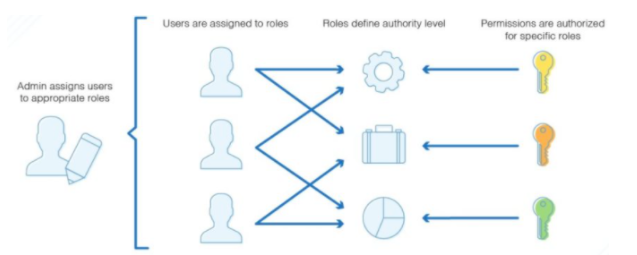

Role Based Access Control Model Example
RBAC Definition RBAC - Role Based Access Control is an approach used to restrict system access to authorised users only.
In essence it is how you delegate permissions from specific tasks to a specific group, to which relevant user accounts are then added. The below picture shows this in a visual manner.

This approach stops excessive permissions being granted to accounts. The main benefits of this are that if an individual account is compromised you will not have exposed all (or a large number of) systems as the access of this individual account will be very specific and restricted.
RBAC lets employees have access rights only to the information they need to do their jobs and prevents them from accessing information that doesn’t pertain to them.
In the role-based access control data model, roles are based on several factors, including authorization, responsibility and job competency. As such, companies can designate whether a user is an end user, an administrator or a specialist user. In addition, access to computer resources can be limited to specific tasks, such as the ability to view, create or modify files. An employee’s role in an organization determines the permissions that individual is granted and ensures that employees can’t access sensitive information or perform high-level tasks that are not required for their own role.
The use of RBAC to manage user privileges within a single system or application is widely accepted as a best practice method to protect the system from unauthorised access.
Approach
The starting point for any RBAC model is to define what you actually want the role to cover. By clearly defining the role requirements you will then be able to decide upon and grant the exact required permissions before you even consider adding in the users.
By using RBAC you are delegating roles to the users of the group. The precise approach for the delegation of control is to be managed by the creation of Roles, in the form of Active Directory Security Groups (hereafter referred to as Role Groups).
These Roles will then be applied to the relevant privileged users.
But why should we delegate control ?
Well, the key reason is that by simplifying roles and not giving any more control than required to carry out tasks gives you a more secure system (eg if an account is compromised you will not expose full system access, rather just the level of access to what the account was assigned).
The roles may then be made up of another selection of nested Active Directory Security Groups (hereafter referred to Permission Groups) which will actually be used to delegate to the control required.
With this approach it allows for more consistency across all users, Permissions Groups can only be members of Role Groups, they should never be added directly to a user account.
As an added benefit, if there is a requirement for additional permissions - new Permissions Groups can be created and then added to the required Role Groups.
Example roles
You should base your roles on specific areas of management of your systems. For example you will have generalist roles for user support. These will not require deep permissions into anything other than workstations or user account management in most organisations.
Staff who administer your general server estate will require the ability to log into the consoles of the server. They will not need to be able to log into networking equipment with administrative credentials.
Working on this basis you can start to develop your own roles and the associated permissions, and then consider who actually needs accounts for these roles.
The following roles are typical examples of how to delegate permissions to distinct roles, giving usable subsets of access for the required users. There are many other roles which can be deployed, and of course you can amalgamate roles together if you have smaller teams if so desired. Note that the standard user type of account is not detailed here as that is already in place.
Good RBAC design will have the principle of ‘Least Privilege’ at its heart.
| Description | Purpose |
|---|---|
| Helpdesk / User Administrator | This account role will be used for Active Directory Management of non-privileged accounts, groups and workstations. Also, this will be used to access user desktops remotely using Remote Assistance, with local administrator rights to the workstations. |
| Server Administrator | This account role will be used for Active Directory Management of Helpdesk, Administrator and Server Administrator accounts. Also, this will be used to access the Servers via Remote Desktop, with local administrator rights to these servers. |
| Database Administrator | This account role will be used to manage the SQL Instances and/or Databases. This account will not have permissions to log onto or administer the Servers running the SQL instances, rather just have access to the SQL instances themselves. |
| Backup Administrator | This account role will be used to manage access to the backup servers and devices. |
| Email Administrator | This account role will be used to manage the email services on premise, and where applicable will have rights within the M365 environment. |
| Network Administrator | This account role is aimed at being used to access Network Devices such as Switches, Routers and Firewalls |
| Domain Administrators | This account role will be a member of the Built In Domain Administrator groups. |
As previously mentioned, these are merely sample role types which you may consider implementing or basing your own roles around. This is not a definitive list.
For example, with Database management, you can have a single ‘all encompassing’ role for management, or separate the roles into more granular ones for specific tasks - such as: Database server privileged accounts (for maintenance accounts performing tasks such as TX log backups, Maintenance plans, etc).
Individual DBA accounts for explicit database management.
DB Administration accounts for the administration of the entire SQL instance.
Aggregated Roles
In smaller IT teams splitting the roles out in a very specific manner might not be the best way to do things, but there is still the need to reduce the scope of administrative accounts to reduce any potential attack surface.
In circumstances like these you may wish to amalgamate similar roles together (eg SQL Administrators and Oracle Administrators), but keep them separate from email administrators or General User Administration.
Follow the ‘spirit’ of separation of duties wherever possible, but in a way which minimises crossover between distinctly different roles without creating a large number of accounts per user.
As detailed earlier with Databases you can either have 3 distinct roles for the different aspects of management of a database setup, or aggregate the roles into a single one for control of the database environment.
Sample creation process for a group/role
- Define the resources and services you wish to control
- Create (Security) group for the role
- Create a mapping of roles to resources
- Assign users (new separate accounts ideally) to the role/group
- Apply the group to ACL (Access Control Lists)
Example : Helpdesk / User Administrator
- Define the resources and services you wish to control
Ability to reset user passwords and unlock accounts
- Create (Security) group for the role
Name Group Appropriately and keep in the correct OU for this type of object
Example : “User Admins”
- Create a mapping of roles to resources
Role will require access via RSAT (Remote Server Administration Tools) installed ideally on a jump server.
Role will require ability to log onto the jump server (set as RDS Permissions in the GPO for the OU where the Jump Servers are located).
Role will require delegated permissions to required OU’s in Active Directory
- Either at top level, or delegated permissions to an OU
Assigning any other required permissions to the role group.
- Assign users (new separate accounts ideally) to the role/group
Create users with agreed upon naming suffix (in this instance .hd - example john.smith.hd) and add these accounts to the new security group for the role
- Apply the group to ACL (Access Control Lists)
Add the group to the security for resources, granting required permissions to perform the role
A Simple RBAC
RBAC does not have to be a complicated process. For example a simple way to illustrate Role Based Access is to lock RDS access to servers down to a specific group of accounts - such as those designated as ‘Server Administrators’. This protects your servers from unauthorised access in a simple manner.
To do this you may employ the following process:
Create a ‘Server Administrator’ Role (Security Group)
Change Remote Access to a server to have ALL users and groups removed.
Add the new ‘Server Administrator’ Role Security Group to the allowed RDS users.
Create and add new users to the ‘Server Administrator’ Role Security Group (eg john.smith.sa)
Test access with accounts that have and don’t have the permissions. This should ratify you have successfully configured the role and its users.
Example of username designation
In order to give you full traceability of ‘who did what’, each user in a role should have their own uniquely identifiable account name. And in order to make the accounts descriptive, the recognised convention is to add a suitable suffix to the account name.
The detail listed in this table is purely an example of what you can use as are not a ratified standard, they are merely derived from the role purpose.
| Account Naming Convention | Description |
|---|---|
| %username%.hd | Helpdesk / User Administrator |
| %username%.sa | Server Administrator |
| %username%.dba | Database Administrator |
| %username%.bk | Backup Administrator |
| %username%.ea | Email Administrator |
| %username%.na | Network Administrator |
| %username%.da | Domain Administrators |
As an example, regular user ‘John Smith’ may have an account of john.smith
The user may then have a helpdesk administrator account of john.smith.hd, and a database administrator account of john.smith.dba
Further Considerations
When Planning:
Take a sensible approach. Think of RBAC as an ongoing program, not a project. Don’t expect to achieve 100% coverage of all access via RBAC as you implement it. A comprehensive RBAC solution could take months or even years to complete. It is realistic and acceptable to implement RBAC in steps or phases.
Do an in-depth exercise to clean up bad data and entitlements. Do this exercise as prerequisite before creating and defining roles for the RBAC program. Much cleaner data is one of the prime recipes of the successful RBAC program implementation.
Start simple and familiar. Target roles for areas that are more familiar in the business. This way you eliminate the “discovery” portion of trying to figure out what access might be needed.
Target areas of high turn-over. Identify the business areas where provisioning and de-provisioning processes are already established. These areas are usually very well understood from an access perspective.
Start small. Don’t try and do all roles across the entire organization in one go. That will fail.
*Assign role owners * Assign role owners to represent each area from the business side. Identify the people who have the best insider knowledge about their departments as role owners.
Make roles reusable. If only one person in the whole organization has some particular role, maybe that access shouldn’t be managed via RBAC. Each role should have at least two members so that factors such as sickness and holiday cover are accounted for.
Make sure the roles you define are applicable to groups of people; otherwise, your role model will be unwieldy and will not deliver the goals of efficiency and simplification
Documentation: Document roles and responsibilities
List the new accounts that have access to these roles
Testing: Test and verify your roles. Roles need as much testing and verification as other functionality – may be more. If you define roles sub-optimally at the outset and put them into production, you can end up with a lot of users who lack the access they need or who have more access than they should. There can be a big cleanup effort if you roll out a role structure that has not been set up and tested properly.
Auditing: Regularly review Regularly review the memberships of the roles.
Remove users Remove users who no longer require access. This should include any supplier accounts, project staff accounts, etc.
Remember - roles change As part of your auditing consider this, and that Roles aren’t a one-time thing.
They need to change with the business and you’ll need to revisit them periodically to make sure to verify that they continue to be relevant and that the appropriate users are grouped under their most suitable roles.
Plan to establish proper role maintenance processes. Consider establishing role recertification processes to keep them up to date with business changes.
Remember: Enforce the least privilege Define roles so that you don’t give people access they don’t need.
Setting up roles for the least privilege is a best practice for reducing security risk, both from malicious intent and from user errors.
Review NCSC guidelines https://www.ncsc.gov.uk/collection/10-steps-to-cyber-security/the-10-steps/managing-user-privileges